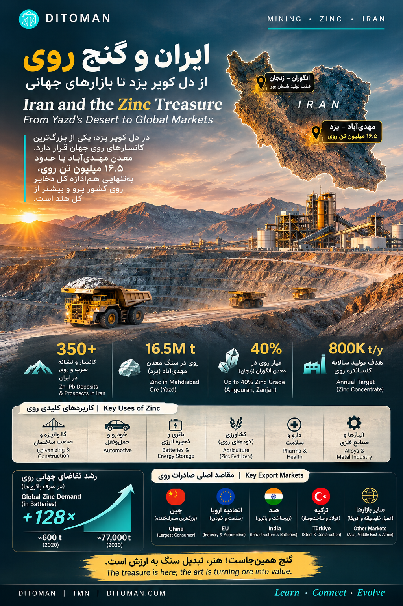

Iran and the Zinc Treasure
ایران و گنج روی
یک کانسار در کویر یزد تقریباً بهاندازهی کل ذخایر روی پرو، روی دارد. با هم میبینیم ایران چه دارد، دنیا با روی چه میکند، همین حالا چه چیزی در حال ساخت است و یک جوان ایرانی روی این پایه چه میتواند بسازد.
One deposit in the Yazd desert holds about as much zinc as all of Peru's reserves. What Iran has, what the world does with zinc, what is being built right now, and what a young Iranian could build on top of it.
گاهی آدم درباره کشور خودش چیزهایی نمیداند که دنیا دارد روی آن حساب میکند. این مقاله درباره یکی از همانهاست: فلزی که هر روز لمسش میکنیم و نمیبینیمش، و ذخیرهای در دل کویر یزد که بهتنهایی هماندازه ذخایر یک کشور معدنی است. این را نه برای افتخار خالی مینویسیم، بلکه برای اینکه نشان بدهیم فاصله بین «داشتن» و «ساختن» دقیقاً کجاست و چه کسی میتواند پرش کند.
۰۱. روی چیست و چرا دنیا دنبالش است؟
روی (Zinc) چهارمین فلز پرمصرف دنیاست، بعد از آهن، آلومینیوم و مس؛ بازاری حدود ۴۰ میلیارد دلار در سال. بیشترش صرف «گالوانیزه کردن» میشود: پوشش نازکی که نمیگذارد فولاد زنگ بزند. هر پل، دکل برق، بدنه خودرو، گاردریل و لولهای که سالها دوام میآورد، معمولاً لایهای از روی دارد. بعد از آن برنج و آلیاژها، قطعات ریختهگری، اکسید روی در لاستیک و سرامیک و داروسازی و ضدآفتاب، کود کشاورزی و مکمل غذایی میآیند.
چند اتفاق در سالهای اخیر روی را از یک فلز معمولی به یک ماده «راهبردی» تبدیل کرده است:
- فهرست مواد حیاتی: سازمان زمینشناسی آمریکا در ۲۰۲۲ روی را به فهرست رسمی مواد معدنی حیاتی این کشور اضافه کرد. آمریکا حدود ۷۷٪ روی تصفیهشده خود را وارد میکند.
- باتری و ذخیره انرژی: باتریهای روی در برابر حرارت پایدارند، به سیستم اطفای حریق نیاز ندارند و برای ذخیرهسازیهای بیش از هشت ساعت اقتصادیترند. انجمن جهانی روی (IZA) برآورد میکند مصرف روی در باتریها از حدود ۶۰۰ تن در ۲۰۲۰ به حدود ۷۷ هزار تن در ۲۰۳۰ برسد. شرکت آمریکایی Eos Energy در حال دو برابر کردن ظرفیت تولید باتری رویِ خود به ۸ گیگاواتساعت است.
- سلامت و غذا: سازمان ملل روی را «مادهای نجاتبخش» مینامد؛ کمبودش در تغذیه، سالانه جان حدود ۲۰۰ هزار کودک را میگیرد. خاکهای آهکی، که بخش بزرگی از خاک کشاورزی ایران را میسازند، معمولاً فقیر از روی قابلجذباند و طبق دادهای که معاونت علمی ریاستجمهوری نقل کرده، حدود ۴۰٪ ایرانیها کمبود روی دارند.
به زبان ساده: روی همزمان ماده ساختمان، ماده انرژی و ماده سلامت است. و تقاضایش رو به بالاست.
۰۲. ایران چه دارد؟
پژوهشگران ایرانی و فرانسوی در مجله Geoscience Frontiers (۲۰۱۸) نوشتهاند در ایران بیش از ۳۵۰ کانسار و نشانه سرب و روی شناسایی شده، عمدتاً در دو کمربند ملایر–اصفهان و یزد–انارک، که هر دو بخشی از کمربند بزرگ فلززایی تتیساند. دو تا از این کانسارها در مقیاس جهانیاند:
- انگوران، زنجان: دهههاست که استخراج میشود و بخشی از سنگ معدنش تا ۴۰٪ روی دارد؛ عیاری که در دنیا کمیاب است. طبق S&P Global ظرفیت استخراج آن حدود یک میلیون تن سنگ در سال است. همین معدن زنجان را به قطب شمش روی ایران تبدیل کرده است.
- مهدیآباد، یزد: طبق مقالهای در Ore Geology Reviews (۲۰۱۹)، حدود ۳۹۴ میلیون تن سنگ با میانگین ۴٫۲٪ روی، ۱٫۶٪ سرب و ۳۶ گرم در تن نقره، بهعلاوه بیش از ۴۰ میلیون تن باریت. پژوهشگران آن را کانساری «در کلاس جهانی» و بزرگترین کانسار رسوبی سرب و روی ایران میدانند. سن آن به کرتاسه زیرین برمیگردد؛ یعنی حدود ۱۲۰ میلیون سال پیش در کف دریایی کمعمق شکل گرفته است.
یک مقایسه که عمق ماجرا را نشان میدهد: روی موجود در سنگ مهدیآباد حدود ۱۶٫۵ میلیون تن برآورد میشود. طبق آمار ۲۰۲۶ سازمان زمینشناسی آمریکا، کل ذخایر روی پرو حدود ۱۸ میلیون تن، هند ۱۰ میلیون تن و مکزیک ۱۴ میلیون تن است. یعنی یک کانسار، هماندازه ذخایر کل یک کشور معدنی.
یک نکته درباره صداقت در عددها
بعضی مقامها مهدیآباد را «دومین ذخیره روی جهان» معرفی کردهاند. مقالههای علمی چنین رتبهای نمیدهند و سازمان زمینشناسی آمریکا هم ذخایر ایران را در جدول کشورها جداگانه نیاورده است. ما به همان مقایسهای که سندش را داریم بسنده میکنیم؛ همان هم بهاندازه کافی بزرگ است.
۰۳. چه کار بزرگی در جریان است؟
مهدیآباد از دهه ۱۳۷۰ شناختهشده بود، ولی سالها بدون سرمایه و فناوری خوابیده بود. سازمان زمینشناسی آمریکا در گزارش خود درباره ایران مینویسد این طرح «از دهه ۱۹۹۰ در دست توسعه بوده و بارها به تأخیر افتاده». آنچه در این چند سال عوض شده این است:
- ۱۳۹۵ / ۲۰۱۷ امضای قرارداد حدود یک میلیارد دلاری ایمیدرو با کنسرسیومی شششرکتی به رهبری شرکت ایرانی مبین؛ بهرهبرداری ۲۵ ساله
- ۱۴۰۲ / ۲۰۲۳ فاز اول کارخانه فرآوری با حدود ۳۰۰ میلیون دلار سرمایهگذاری به مراحل پایانی رسید؛ مدیران طرح آن را بزرگترین کارخانه فرآوری سرب و روی خاورمیانه میخوانند
- ۱۴۰۴ / ۲۰۲۵ تنها در سهماهه نخست سال، بیش از ۱۷۰ هزار تن کنسانتره سرب و روی تولید شد
- بهمن ۱۴۰۴ / فوریه ۲۰۲۶ به گزارش Trend، تولید کنسانتره روی و سرب و باریت مجتمع جهش کرده و از اهداف استخراج و فروش جلو زده است
هدف نهایی در سه فاز: سالانه ۸۰۰ هزار تن کنسانتره روی و ۸۰ هزار تن کنسانتره سرب و نقره. ذخیره قابلاستخراج حدود ۱۷۰ میلیون تن اعلام شده؛ یعنی کار برای چند دهه. آب کارخانه از ۱۰۰ کیلومتر دورتر و از پساب تصفیهشده شهر یزد میآید، نه از سفرههای زیرزمینی کویر. مهندسان ایرانی برای معدنی در خشکترین نقطه کشور راهحلی پایدار پیدا کردهاند.
در سوی دیگر زنجیره، زنجان با دهها کارخانه ذوب و شمش، ظرفیت تولید شمش روی کشور را به حدود ۴۸۰ هزار تن در سال رسانده است. تولید واقعی طبق آمار رسمی حدود ۲۲۰ هزار تن است؛ یعنی نیمی از ظرفیت خالی است، چون خوراک کم بوده. مهدیآباد دقیقاً همین جای خالی را پر میکند. طبق S&P Global، ترکیه، عراق و امارات بازارهای اصلی محصولات روی ایراناند.
۰۴. درس کره و هند: ارزش در سنگ نیست، در دانش است
کره جنوبی معدن روی قابلتوجهی ندارد. با این حال شرکت Korea Zinc، که در ۱۹۷۴ تأسیس شد و در ۱۹۷۸ با ۵۰ هزار تن روی در سال شروع کرد، امروز بزرگترین ذوبکننده روی جهان است: حدود ۶۵۰ هزار تن روی و ۴۲۰ هزار تن سرب در سال، و در کنارش ۱۸ فلز و محصول شیمیایی دیگر که از همان کنسانترهها بیرون میکشد، از طلا و نقره تا ایندیم، بیسموت، آنتیموان، گالیم و ژرمانیم. مهندسانش میگویند راز کارشان این است که «پسماند» را دور نمیریزند، بلکه از آن مادههای دیگر بازیابی میکنند. دسامبر ۲۰۲۵ این شرکت اعلام کرد با پشتیبانی دولت آمریکا کارخانهای ۷٫۴ میلیارد دلاری در تنسی میسازد؛ مشتریانش سامسونگ، هیوندای و لاکهید مارتیناند. کشوری بدون معدن، با دانش فرآوری، به گلوگاه زنجیره تأمین فلزات حیاتی جهان تبدیل شد.
هند راه دیگری رفت: شرکت دولتی Hindustan Zinc در ۱۹۶۶ تأسیس شد و با تکیه بر معدن رامپورا آگوچا، که بزرگترین معدن روی جهان خوانده میشود، و ذوبخانههای یکپارچه در راجستان، امروز دومین تولیدکننده روی جهان است با حدود ۲۵ هزار کارمند و درآمد سالانه حدود ۳٫۶ میلیارد دلار.
دو کشور، دو مسیر، یک درس: سنگ معدن بهتنهایی ثروت نیست. ثروت در فرآوری، در بازیابی محصول جانبی، در استاندارد، در مهندسی و در آدمهایی است که اینها را بلدند. و این دقیقاً همان چیزی است که میشود یاد گرفت.
۰۵. نردبان ارزش: از سنگ تا محصول
هر پلهای که سنگ معدن بالا میرود، ارزشش چند برابر میشود و شغلهایی با مهارت بالاتر میسازد. نردبان روی تقریباً این شکلی است:
- سنگ معدن و کنسانتره: استخراج، خردایش، فلوتاسیون. اینجا پول در حجم است و بیشتر دست شرکتهای بزرگ.
- شمش روی: ذوب و تصفیه الکترولیتی. زنجان اینجا ایستاده است.
- گالوانیزه، ریختهگری تحت فشار، آلیاژها: خدمات صنعتی برای فولاد، خودرو، لوازم خانگی و ساختمان. بازار داخلی بزرگی دارد.
- اکسید روی و ترکیبات شیمیایی: لاستیک، سرامیک، رنگ، داروسازی، ضدآفتاب، تغذیه دام. اکسید روی نانو و دارویی محصولی دانشبنیان است با مشتری جهانی.
- کود و مکمل روی: خاک ایران آهکی و فقیر از روی است؛ یعنی بازار داخلی آمادهای برای کودهای روی و مکملهای غذایی وجود دارد. یک شرکت دانشبنیان ایرانی همین حالا مکمل روی لیپوزومی تولید میکند و سالانه حدود ۲۰۰ هزار بطری میفروشد.
- باتریهای روی: روی–یون، روی–برم، روی–هوا. دنیا هنوز در ابتدای این راه است و فاصله ایران با رقبا کمتر از لیتیوم است.
- بازیافت: غبار کورههای فولادسازی سرشار از روی است. ایران جزو ده فولادساز بزرگ دنیاست؛ یعنی «معدن شهری» بزرگی برای روی دارد که هنوز کامل برداشت نشده.
- محصولات جانبی: نقره، باریت (ایران بزرگترین ذخایر باریت جهان را دارد و باریت ماده اصلی گل حفاری نفت است)، و در صورت داشتن فناوری، فلزات کمیاب همراه مثل ژرمانیم و ایندیم؛ همان کاری که کره میکند.
۰۶. پیشنهاد دیتومان به نسل جوان ایران
این بخش را صریح مینویسیم، چون فکر میکنیم مهمترین بخش این مقاله است. مهدیآباد و انگوران را شرکتهای بزرگ میگردانند؛ کار آنها استخراج است. اما پلههای بالای نردبان، از اکسید روی تا باتری تا نرمافزار معدن، جایی است که یک تیم کوچک با دانش درست میتواند وارد شود. چند پیشنهاد مشخص:
- یکی از پلهها را انتخاب کن و در آن جهانی شو. نیازی نیست همه زنجیره را بسازی. یک محصول: اکسید روی دارویی با استاندارد بینالمللی، یک کود روی با اثربخشی اثباتشده، یک فناوری بازیافت غبار فولاد، یک سلول باتری روی. چیزی که اگر در یزد خوب کار کند، در هند و ترکیه و مصر هم خریدار داشته باشد.
- از دانشی شروع کن که ارزان است و دیر به دست میآید. متالورژی، مهندسی شیمی و مواد، الکتروشیمی، زمینشناسی اقتصادی، و در کنارش داده و اتوماسیون. Korea Zinc برای کارخانه جدیدش «دوقلوی دیجیتال» و هوش مصنوعی میخواهد؛ این مهارتها را میشود همین امروز، از همین شهر، یاد گرفت.
- از دانشگاه خودت شروع کن. دانشگاههای زنجان، یزد، تهران، امیرکبیر و صنعتی اصفهان سالهاست روی همین کانسارها مقاله مینویسند؛ بعضی از آنها در معتبرترین مجلههای دنیا چاپ شدهاند. پایاننامهات را روی مسئلهای واقعی از همین زنجیره بگذار و با یک کارخانه، نه فقط یک استاد، تعریفش کن.
- از روز اول با زبان و استاندارد جهانی کار کن. محصولی که گواهی بینالمللی دارد، در هر بازاری فروخته میشود؛ محصولی که ندارد، فقط در یک بازار. انگلیسی فنی، مستندسازی، کنترل کیفیت و ثبت اختراع بخشی از خود محصولاند، نه کار بعد از آن.
- به پسماند به چشم ماده اولیه نگاه کن. هر جا در صنعت روی چیزی «دور ریخته میشود»، احتمالاً یک کسبوکار پنهان است. این دقیقاً فلسفهای است که کره را به بزرگترین بازیگر دنیا تبدیل کرد.
- به ایران فکر نکن؛ از ایران فکر کن. ظرفیت ذخایر ایران آنقدر هست که بازار هدف نباید فقط داخل باشد. کسی که امروز بیست سال دارد و ده سال روی یکی از این پلهها کار میکند، در سی سالگی در موضوعی متخصص است که دنیا برایش صف میکشد؛ چون روی، طبق همه پیشبینیها، در دهه آینده بیشتر خواسته میشود، نه کمتر.
ما در دیتومان سرمایهگذاری را فقط خریدن یک دارایی نمیدانیم. سرمایهگذاری روی دانش خودت، در حوزهای که کشورت در آن ذخیره طبیعی دارد و دنیا در آن تقاضای فزاینده، شاید مطمئنترین سرمایهگذاریای باشد که یک جوان ایرانی میتواند بکند.
۰۷. موانع را هم ببینیم
این روایت امید است، نه انکار. فاصله بین ذخیره و بازار جهانی، با چند مانع واقعی پر شده است: دسترسی به سرمایه و فناوری زیر تحریم، آب و انرژی در مناطق خشک، و رقابت با تولیدکنندگانی که دههها جلوترند. سهم ایران از بازار جهانی روی هنوز حدود ۱٪ است، در حالی که طبق آمار رسمی سازمان زمینشناسی کشور، ایران حدود ۷٪ ذخایر معدنی جهان را با ۱٪ جمعیت آن دارد. این فاصله را میشود دو جور دید: یا حسرت، یا فرصت. ما روایت دوم را انتخاب میکنیم؛ نه چون آسان است، بلکه چون تنها راهی است که به جایی میرسد.
جمعبندی: گنج همینجاست؛ زیر خاک یزد و زنجان، در مقالههای پژوهشگران ایرانی، و در کارخانهای که در دل کویر با پساب شهر کار میکند. هنر، تبدیل سنگ به ارزش است، و این هنر را میشود یاد گرفت.
Sometimes people do not know things about their own country that the rest of the world is counting on. This article is about one of them: a metal we touch every day without seeing it, and a deposit in the Yazd desert that on its own holds about as much zinc as a mining nation's entire reserves. We are not writing this for empty pride, but to show exactly where the gap between "having" and "building" lies, and who can jump it.
01. What zinc is and why the world wants it
Zinc is the fourth most-used metal in the world after iron, aluminium and copper, a market of roughly $40 billion a year. Most of it goes into galvanising: the thin coating that stops steel from rusting. Every bridge, power pylon, car body, guardrail and pipe that lasts for decades usually carries a layer of zinc. Then come brass and alloys, die-cast parts, zinc oxide in rubber, ceramics, pharmaceuticals and sunscreen, fertilisers and dietary supplements.
Several developments have turned zinc from an ordinary metal into a strategic one:
- Critical mineral lists: the US Geological Survey added zinc to the official US critical minerals list in 2022. The United States imports about 77% of its refined zinc.
- Batteries and storage: zinc batteries are thermally stable, need no fire suppression and are more economical for storage durations beyond eight hours. The International Zinc Association projects zinc use in batteries to rise from about 600 tonnes in 2020 to about 77,000 tonnes by 2030. Eos Energy in the US is doubling its zinc-battery capacity to 8 GWh.
- Health and food: the UN calls zinc a "life-saving commodity"; deficiency costs an estimated 200,000 children's lives a year. Calcareous soils, which make up much of Iran's farmland, are typically poor in available zinc, and data cited by Iran's Vice-Presidency for Science puts zinc deficiency at about 40% of Iranians.
02. What Iran has
Iranian and French researchers writing in Geoscience Frontiers (2018) count more than 350 lead-zinc deposits and occurrences in Iran, concentrated in the Malayer-Esfahan and Yazd-Anarak belts, both part of the great Tethyan metallogenic belt. Two of them are world-scale:
- Angouran, Zanjan: mined for decades, with parts of its ore grading up to 40% zinc, a grade rarely seen anywhere. S&P Global puts its mining capacity at about one million tonnes of ore a year. It made Zanjan Iran's zinc-smelting hub.
- Mehdiabad, Yazd: according to Ore Geology Reviews (2019), about 394 million tonnes of ore averaging 4.2% zinc, 1.6% lead and 36 g/t silver, plus more than 40 million tonnes of barite. The authors call it a world-class deposit and the largest sediment-hosted Zn-Pb deposit in Iran, formed on a shallow sea floor in the Early Cretaceous, roughly 120 million years ago.
One comparison shows the scale: the zinc contained in Mehdiabad's ore is estimated at about 16.5 million tonnes. The USGS's 2026 figures put Peru's entire zinc reserves at about 18 million tonnes, India's at 10 million and Mexico's at 14 million. One deposit, the size of a mining country's reserves.
A note on honest numbers
Some officials have called Mehdiabad "the world's second-largest zinc reserve". The scientific papers assign no such rank, and the USGS does not list Iran's reserves separately in its country table. We stick to the comparison we can document. It is big enough.
03. What is being built right now
Mehdiabad has been known since the 1990s but lay dormant for years without capital or technology; the USGS describes the project as "under development since the 1990s but repeatedly delayed". What has changed:
- 2017 IMIDRO signs a roughly $1 billion contract with a six-company consortium led by Iran's Mobin Mining; a 25-year operating term
- 2023 Phase 1 of the processing plant, about $300 million of investment, reaches its final stages; managers call it the largest lead-zinc processing plant in the Middle East
- 2025 more than 170,000 tonnes of lead-zinc concentrate produced in the first quarter of the Iranian year alone
- February 2026 output of zinc and lead concentrate and barite surges past extraction and sales targets (Trend)
The final target, in three phases, is 800,000 tonnes of zinc concentrate and 80,000 tonnes of lead-silver concentrate a year, from an extractable reserve of about 170 million tonnes: decades of work. The plant's water comes 100 km by pipeline from Yazd's treated municipal wastewater, not from desert aquifers. Iranian engineers found a sustainable answer for a mine in the driest part of the country.
Downstream, Zanjan's dozens of smelters give Iran about 480,000 tonnes a year of zinc ingot capacity, of which only about 220,000 tonnes is actually produced, because feed has been short. Mehdiabad fills exactly that gap. S&P Global names Turkey, Iraq and the UAE as the main markets for Iranian zinc products.
04. The lesson from Korea and India: the value is not in the rock
South Korea has no zinc mines to speak of. Yet Korea Zinc, founded in 1974 and starting with 50,000 tonnes a year in 1978, is today the world's largest zinc smelter: about 650,000 tonnes of zinc and 420,000 tonnes of lead a year, plus 18 other metals and chemicals pulled from the same concentrates, from gold and silver to indium, bismuth, antimony, gallium and germanium. Its engineers say the secret is that they do not treat by-products as waste but recover other materials from them. In December 2025 the company announced a $7.4 billion refinery in Tennessee backed by the US government; its customers include Samsung, Hyundai and Lockheed Martin. A country without mines became a chokepoint in the world's critical-metals supply chain through processing knowledge.
India took another path: state-owned Hindustan Zinc, founded in 1966, built on the Rampura Agucha mine, often called the world's largest zinc mine, and integrated smelters in Rajasthan, and is today the world's second-largest zinc producer, with about 25,000 employees and revenue of roughly $3.6 billion.
Two countries, two paths, one lesson: ore alone is not wealth. Wealth lies in processing, by-product recovery, standards, engineering and the people who know how. All of which can be learned.
05. The value ladder: from rock to product
- Ore and concentrate: mining, crushing, flotation. Money is in volume, mostly for large companies.
- Zinc ingot: smelting and electrolytic refining. This is where Zanjan stands.
- Galvanising, die-casting, alloys: industrial services for steel, cars, appliances and construction, with a large domestic market.
- Zinc oxide and chemicals: rubber, ceramics, paint, pharma, sunscreen, animal feed. Nano and pharmaceutical-grade zinc oxide is a knowledge-based product with global customers.
- Zinc fertilisers and supplements: Iran's calcareous soils are zinc-poor, so a ready domestic market exists. An Iranian knowledge-based company already makes a liposomal zinc supplement, about 200,000 bottles a year.
- Zinc batteries: zinc-ion, zinc-bromine, zinc-air. The world is early on this road and Iran's distance from the leaders is smaller than in lithium.
- Recycling: steelmaking furnace dust is rich in zinc, and Iran is among the world's top ten steel producers: a large "urban mine" still largely untapped.
- By-products: silver, barite (Iran holds the world's largest barite reserves; barite is the main ingredient of oil-drilling mud) and, with the right technology, associated rare metals such as germanium and indium, exactly what Korea does.
06. Ditoman's suggestion to young Iranians
We write this part plainly, because we think it is the most important part of the article. Mehdiabad and Angouran are run by large companies; their job is extraction. But the upper rungs of the ladder, from zinc oxide to batteries to mining software, are where a small team with the right knowledge can enter. Some concrete suggestions:
- Pick one rung and go global on it. You do not need to build the whole chain. One product: pharmaceutical-grade zinc oxide to an international standard, a zinc fertiliser with proven efficacy, a steel-dust recycling process, a zinc battery cell. Something that, if it works in Yazd, will find buyers in India, Turkey and Egypt.
- Start with knowledge that is cheap to acquire and slow to acquire. Metallurgy, chemical and materials engineering, electrochemistry, economic geology, and alongside them data and automation. Korea Zinc wants digital twins and AI in its new plant; these skills can be learned today, from any city.
- Start at your own university. The universities of Zanjan, Yazd, Tehran, Amirkabir and Isfahan have published on these very deposits for years, some in the world's leading journals. Put your thesis on a real problem from this chain, defined with a factory, not only a professor.
- Work to global language and standards from day one. A product with international certification sells in every market; one without sells in one. Technical English, documentation, quality control and patents are part of the product, not an afterthought.
- Look at waste as feedstock. Wherever something is "thrown away" in the zinc industry, there is probably a hidden business. That is precisely the philosophy that made Korea the world's biggest player.
- Do not think about Iran; think from Iran. The reserves are large enough that the target market should never be only domestic. Someone who is twenty today and spends ten years on one rung will, at thirty, be an expert in something the world queues for, because by every forecast zinc will be wanted more in the coming decade, not less.
At Ditoman we do not see investing only as buying an asset. Investing in your own knowledge, in a field where your country has natural reserves and the world has rising demand, may be the surest investment a young Iranian can make.
07. Seeing the obstacles too
This is a story of hope, not denial. The gap between reserves and world markets is filled with real obstacles: access to capital and technology under sanctions, water and energy in arid regions, and competition with producers decades ahead. Iran's share of the global zinc market is still about 1%, while by its own Geological Survey's figures the country holds about 7% of the world's mineral reserves with 1% of its population. That gap can be read two ways: regret, or opportunity. We choose the second, not because it is easy, but because it is the only reading that leads anywhere.
The takeaway: the treasure is here, under the soil of Yazd and Zanjan, in the papers of Iranian researchers, and in a plant in the desert running on a city's recycled water. The art is turning rock into value, and that art can be learned.
Sourcesمنابع
- Maghfouri et al., Ore Geology Reviews (2019): the Mehdiabad world-class Zn-Pb-Ba-(Cu-Ag) deposit
- Maghfouri et al., Geoscience Frontiers (2018): a review of major non-sulfide zinc deposits in Iran
- USGS Mineral Commodity Summaries 2026: Zinc
- USGS: The Mineral Industry of Iran, 2020–21
- Mining.com: USGS 2022 critical minerals list adds zinc
- S&P Global (June 2025): Factbox on Iran's metals industry
- Technical Review Middle East / Reuters (2017): Iran signs $1bn Mehdiabad deal
- Tasnim / IRNA (Aug 2023): Mehdiabad processing plant
- Trend (Feb 2026): Mehdiabad output multiplies
- Akhbar-e Madan (1404): 170,000+ t of concentrate in Q1
- YJC: national zinc ingot capacity reaches 480,000 t
- Utility Dive (June 2026): can zinc batteries scale?
- The Assay (2022): zinc outlook and IZA battery forecast
- Wikipedia: Korea Zinc · UPI (Apr 2026): Korea Zinc's competitive edge · Al Jazeera (Dec 2025): $7.4bn US refinery
- Wikipedia: Hindustan Zinc
- Vice-Presidency for Science: Iranian knowledge-based zinc supplement
- Agriculture (MDPI, 2024): zinc deficiency in calcareous soils
چراغ روشنBuilt Under Pressure
A Ditoman series documenting what Iranian people and businesses have built, with sources, and without taking political sides.
روایت کارآفرینان و صنعتگرانی که در سختترین شرایط، چراغ کار و تولید را روشن نگه داشتهاند؛ با منبع و بدون موضع سیاسی.